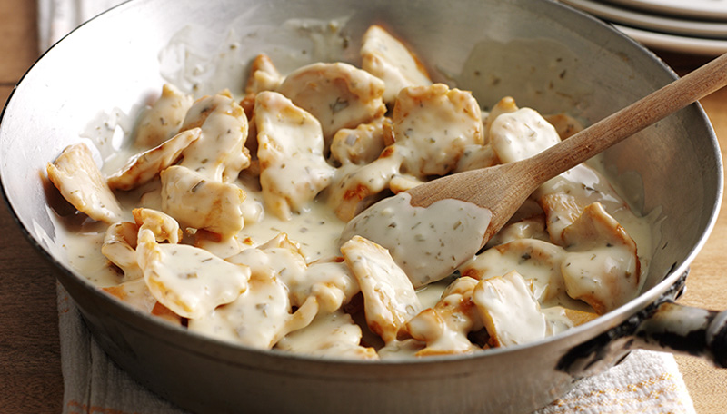

Chicken on the Stove

A hearty home-style chicken dish
- Prep time: 20min
- Cook time: 40min
- Total time: 1hr
- Serves 6
Ingredients
- 3 boneless chicken breasts
- 2 cans Campbell's chicken broth
- 2 cans of water. (Fill broth cans)
- 2 cups Original Bisquick
- 2 tablespoons canola oil or shortening
- Lawry's seasoned salt
- Salt and pepper
Steps to prepare
- Cut up raw chicken breasts into 1/2in cubes
- In a large zip-loc bag, add Bisquick, shake in some Lawry's seasoned salt and add the cubed chicken. Shake until well coated.
- In large pan, add canola or shortening, heat for approx 2min, then add chicken from zip-loc. Stir chicken frequently until evenly browned.
- Add salt and pepper as desired.
- Add 2 cans of Campbell's chicken broth and 2 cans of water. Stir then cover. Cook on low-med for 20-30min, stir frequently.
- Enjoy!